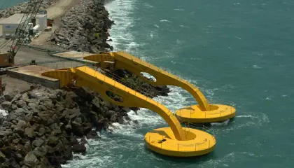

Entenda como ondas e marés podem gerar energia no Brasil
Os investimentos em fontes renováveis de energia, como a eólica e a solar, têm crescido cada vez mais em meio a preocupações com as mudanças climáticas e a contribuição dos combustíveis fósseis. Mas, além desses recursos ainda aproveitados principalmente na terra, o mundo começa a voltar os olhos para outra região com grande potencial energético: os oceanos. Uma região oceânica pode gerar energia de diversas formas, afirma Segen Estefen, professor de engenharia oceânica da UFRJ. É possível produzir energia a partir:
- Do movimento das ondas
- Pela variação de temperatura entrea superfície e o fundo do mar
- Pelas correntes oceânicas
- Por um processo de osmose entre a águasalgada e a doce
- Pelas marés
Atualmente, porém, são as ondas e as marés que possuem as tecnologias mais avançadas para geração de energia. Leia mais Crise hídrica causa risco de desligamento de usinas hidrelétricas Crise hídrica causa risco de desligamento de usinas hidrelétricas Chuvas serão insuficientes para reverter crise hídrica, alertam especialistas Chuvas serão insuficientes para reverter crise hídrica, alertam especialistas Crise hídrica pode atrair investimentos em energia renovável, diz especialista Crise hídrica pode atrair investimentos em energia renovável, diz especialista
Produção pelas marés e pelas ondas
A produção pelas marés é dividida em dois tipos: pelo movimento vertical das marés, de baixa e alta, que é conhecida como energia maremotriz, e pelo movimento horizontal. Mas isso não significa que qualquer região oceânica pode ser usada para a geração de energia. Juliane Taise Piovani, doutoranda em energia na UFABC, afirma que uma usina maremotriz demanda uma maré de, no mínimo, sete metros para funcionar, enquanto a de movimento horizontal exige uma velocidade média de pelo menos 2 metros por segundo. “O mais comum é represar a maré alta e depois deixar fluir na maré baixa, passando por uma turbina e gerando eletricidade. Isso é uma usina maremotriz, o fenômeno das marés gerando eletricidade”, diz Estefen. Já em relação às ondas, o ideal é ter 1,6 metro de profundidade, mas a velocidade e posição dos ventos também influenciam na capacidade de geração. Hoje, a energia maremotriz é mais aproveitada ao redor do mundo do que a de ondas, com tecnologias mais desenvolvidas e usinas em países como França, Canadá e Coreia do Sul. “Existem centenas de técnicas diferentes para fazer esse aproveitamento [de energia pelas ondas], muitas são patenteadas, tanto no Brasil quanto no exterior, não é uma convergência como por exemplo na eólica”, afirma.Potencial energético
Segundo a Empresa de Pesquisa Energética (EPE), o Brasil possui hoje 150 GW de potência energética instalada, com uma predominância da energia hidrelétrica. Estefen afirma que, considerando apenas a região costeira, o país teria um potencial energético de 120 GW no oceano. “Esse é o total, mas em partes a gente não pode instalar [usinas] por questões envolvendo lazer, rota marítima, base militar, local de pesca”, diz. Assim, considerando essas questões, o potencial ficaria próximo de 30 GW ou 40 GW, equivalente a cerca de ¼ da capacidade atual do país. Esse potencial também varia no Brasil, já que as características de ondas e marés não são as mesmas em todas as regiões. “As ondas predominam do Ceará até o Rio Grande do Sul, e as marés predominam do Maranhã para o Norte. É algo complementar”, diz. O potencial de geração das ondas, cerca de 90 GW, é, portanto, maior do que o das marés, de pouco mais de 20 GW e, por isso, Piovani considera que o perfil brasileiro seria de “aproveitamento das ondas”. Mas, mesmo com todo esse potencial, ainda existem muitos desafios para o uso dessas fontes de energia. O próprio processo de instalação de uma usina já é demorado. É necessário fazer análises com simulações matemáticas, de terreno, oceanográfica e também ambiental, já que o uso dos equipamentos de geração de energia pode afetar a fauna e flora marítimas, sendo necessário empregar medidas de mitigação, como o isolamento das turbinas. “O IBGE e o Ibama afirmam que não têm informações de toda a fauna marítima desde 2011, então, fica difícil saber onde ficam exatamente. Precisa de muito estudo, precisa saber bem o terreno, ver a profundidade”, considera Piovani. Oceano Estudos são essenciais para evitar impacto negativo na biodiversidade dos oceanos / Francesco Ungaro/Unsplash A questão ambiental é, segundo Estefen, um dos motivos para a energia maremotriz ainda não ser muito aproveitada em regiões com grande potencial, como na Europa. “O licenciamento ambiental é muito rígido porque afetam a reprodução marinha próxima da costa”, diz.

A energia solar é obtida por meio de placas solares, que captam a energia luminosa e a transformam em energia térmica ou elétrica. Os painéis solares captam a luz do sol e geram energia que é transportada até o inversor solar.

A energia eólica é um tipo de energia renovável gerada da força dos ventos. A estrutura em que ocorre a conversão da energia cinética em eletricidade é chamada de aerogerador.

Energia sustentável é a energia produzida a partir de fontes renováveis, isto é, que não se esgotam como os combustíveis fósseis, por exemplo.

A energia hidrelétrica é aquela que é gerada ao transformar a força da água em energia elétrica. Para aproveitar tal força, são construídas grandes infraestruturas hidráulicas